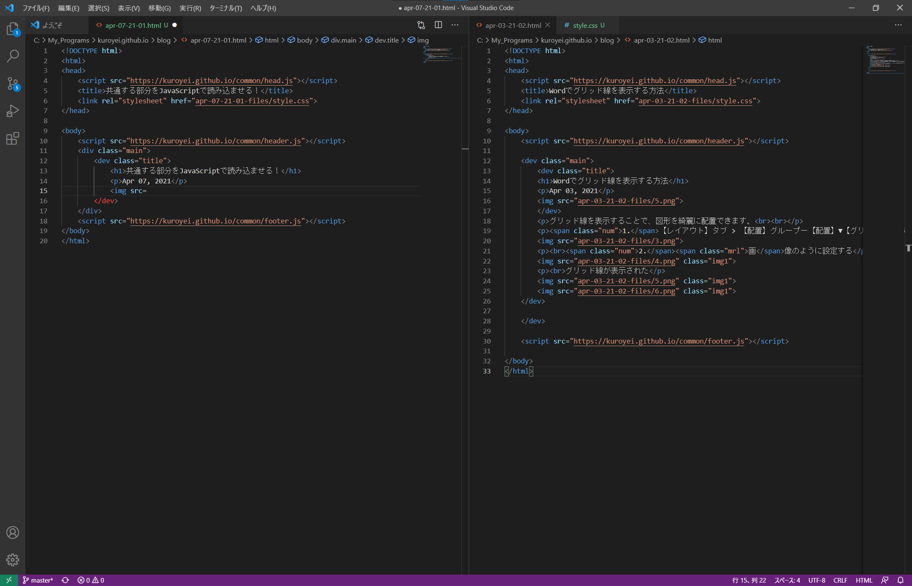

共通する部分をJavaScriptで読み込ませる！
Apr 07, 2021

head、header、footerをJavaScriptファイルから読み込むようにしたい
例
<header> <a href="https://kuroyei.github.io/about-me.html" class="headline">Kuroyei</a> <ul class="nav-list"> <li class="nav-list-item"> <a href="https://kuroyei.github.io/about-me.html">About me</a> </li> <li class="nav-list-item"> <a href="https://kuroyei.github.io/blog.html">Blog</a> </li> </ul> </header>